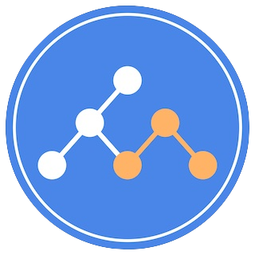

+++
title = "Kuesta"
linkTitle = "Kuesta"

+++

{{< blocks/cover title="" subtitle="" image_anchor="top" color="dark" >}}
<div class="mx-auto">
	
	<div class="cover-title">
		Kuesta
	</div>
	<div class="cover-subtitle">
		CUE-based Network IaC on Kubernetes
	</div>
	<a class="btn btn-lg btn-primary mr-3" href="{{< relref "/docs" >}}">
		ドキュメント <i class="fas fa-arrow-alt-circle-right ml-2"></i>
	</a>
	<a class="btn btn-lg btn-primary mr-3" href="https://github.com/nttcom/kuesta/releases">
		ダウンロード <i class="fab fa-github ml-2 "></i>
	</a>
</div>
{{< /blocks/cover >}}


{{% blocks/lead color="white" %}}
**Kuesta**は、ネットワークのInfrastructure as Codeを可能にするオープンソースのフレームワークです。 </br>
クラウドネイティブなソフトウェア開発で培われたIaCやGitOpsのプラクティスをネットワークに適用し、</br>
高度なネットワーク設定の自動化を実現します。

{{% /blocks/lead %}}


{{< blocks/section color="primary" >}}

{{% blocks/feature icon="fa-feather" title="Usecase Agnostic" %}}
データのマッピング・検査・設定に特化しています。</br>
特定のネットワークレイヤ・技術スタックに限定されず、</br>
あらゆるネットワークモデルに適用できます。
{{% /blocks/feature %}}


{{% blocks/feature icon="fa-file-code" title="Programmability" %}}
データマッピングにCUE言語を採用しています。</br>
コンフィグの検査、型の自動生成、コンフィグ記述に特化した</br>
ソフトウェアプラクティスにより効果的に開発できます。
{{% /blocks/feature %}}


{{% blocks/feature icon="fab fa-github" title="GitOps" %}}
KubernetesカスタムオペレータによるPullベースのアプローチを</br>採用しています。
マニフェストレポジトリの**Single Source of Truth**とGit操作によるオペレーションが実現できます。
{{% /blocks/feature %}}


{{< /blocks/section >}}
